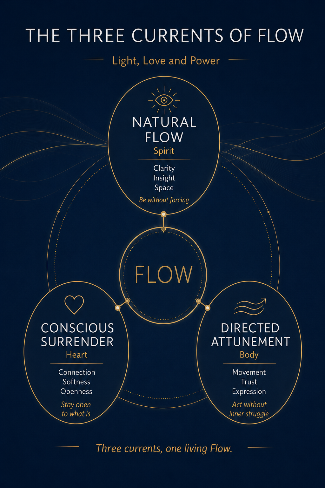
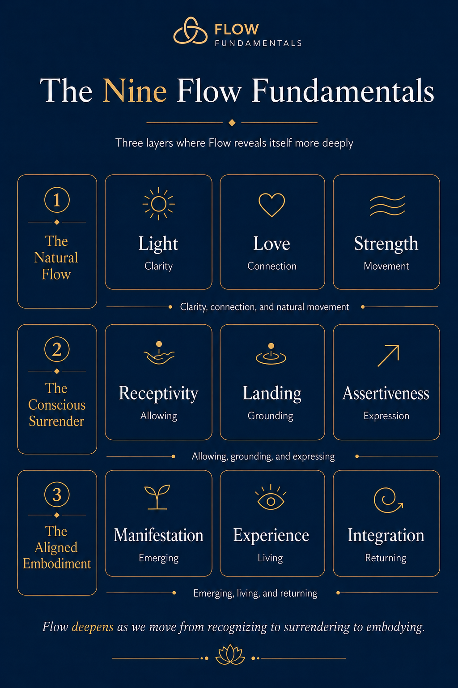
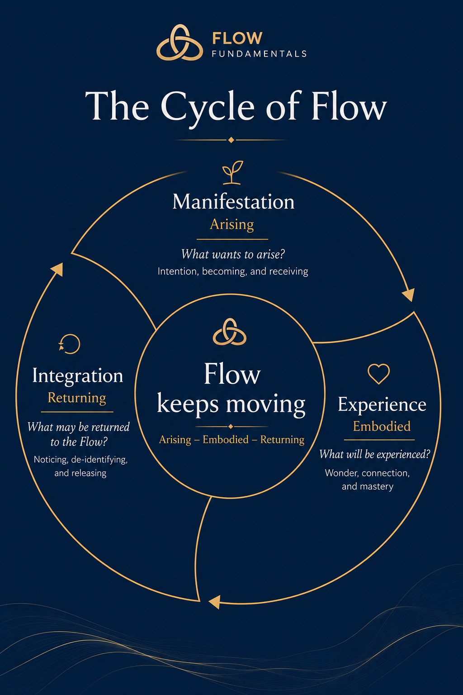
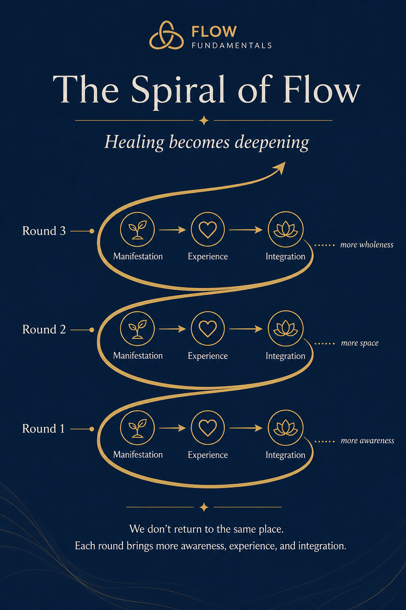
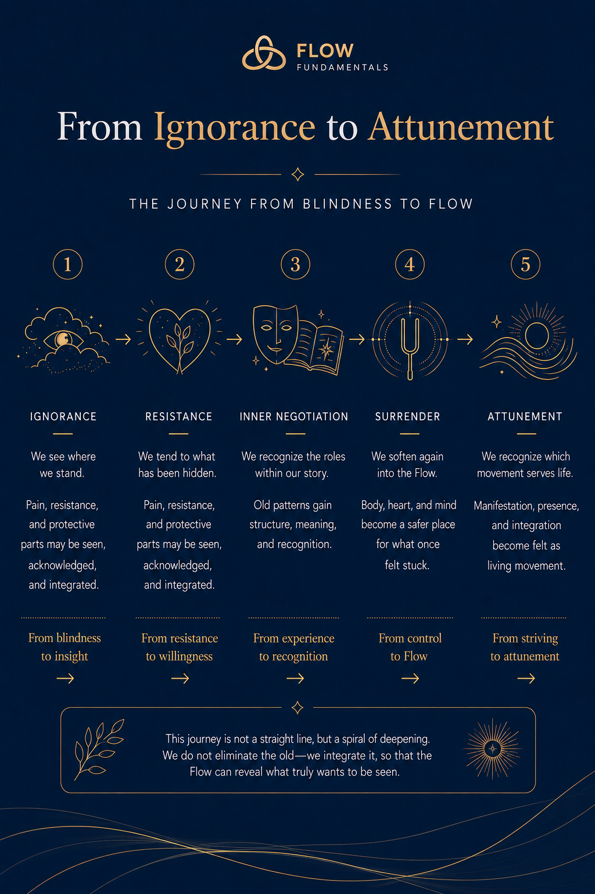
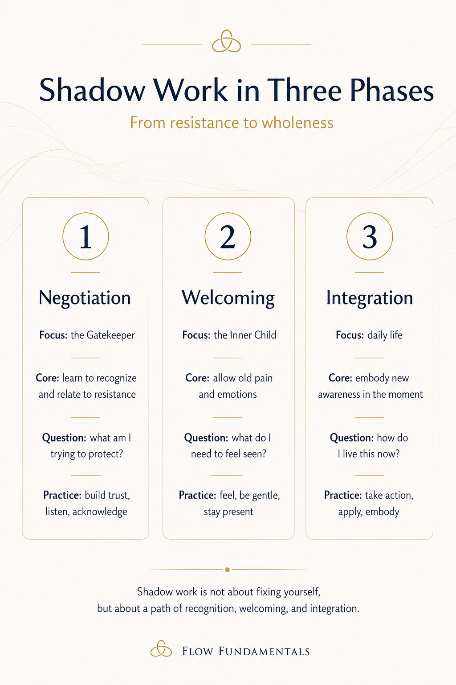
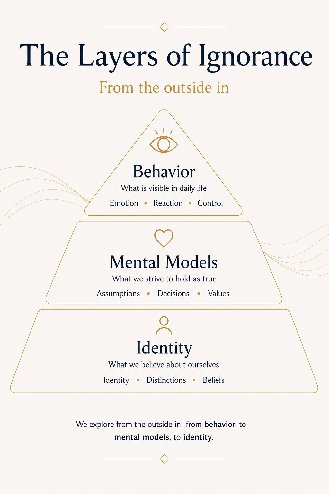
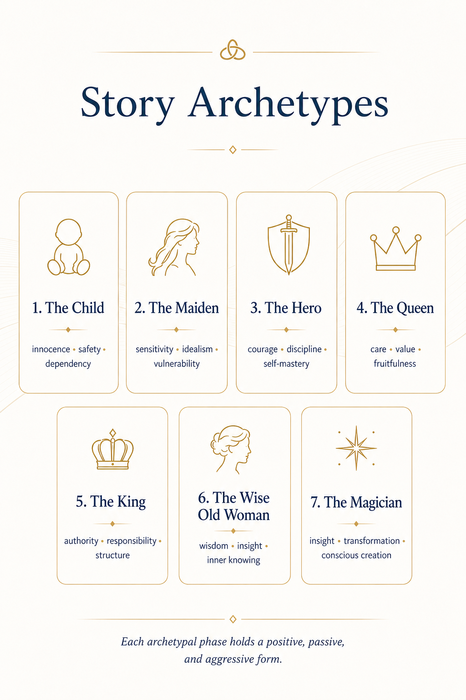
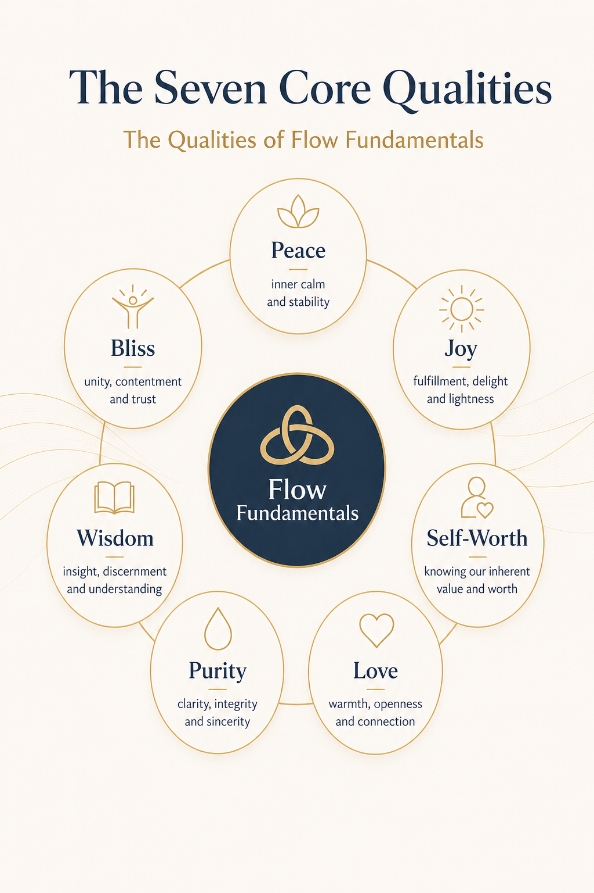
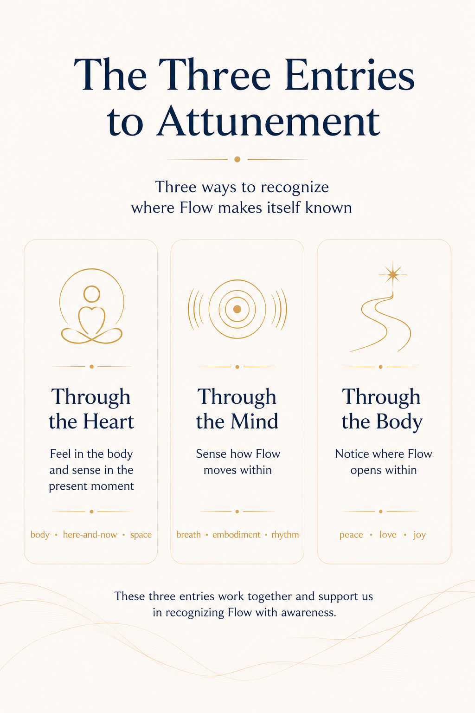

A spiritual map for inner growth
From overthinking to alignment.
Flow Fundamentals helps seekers recognize how life moves through mind, heart and body in what wants to arise, be experienced and be integrated.
The problem
Most spiritual growth stays too mental.
Many seekers collect insights, techniques and practices for years. Meditation, surrender, manifestation, shadow work and self-inquiry can all be valuable. Yet the same method may work one day and feel empty the next.
The missing piece is not always another method. Often, it is the ability to recognize what the Flow is asking now. Sometimes something wants to arise. Sometimes something wants to be lived. Sometimes something old wants to be integrated.
The insight
Flow is not a formula. It is a living movement.
Flow Fundamentals is a map that helps us recognize this movement through body, heart and mind. It brings structure without becoming rigid, depth without becoming vague, and calm without becoming passive.
The main map
The Nine Flow Fundamentals
Three layers in which Flow reveals itself more deeply: Natural Flow, Conscious Surrender and Directed Attunement.

Visual maps
A clear system for recognizing Flow
The images below switch language together with the website.

The Cycle of Flow

The Spiral of Flow

From Ignorance to Attunement

Shadow Work in Three Phases

The Layers of Ignorance

Story Archetypes

The Seven Core Qualities

The Three Entries to Attunement
For whom
For seekers who know a lot, but miss simplicity.
- You feel overwhelmed by spiritual information.
- You want to stop solving everything from the mind.
- You want body, heart and mind to work together again.
- You want shadow work, surrender and manifestation to fit into one clear map.
Book status
Flow Fundamentals is being prepared for publication.
This website is the first home for the book, the maps and future videos. It will grow step by step, without losing its calm and clarity.
The Flow does not need to be found outside of us.
It becomes recognizable when body, heart and mind learn to move with what is already present.
Stay updated